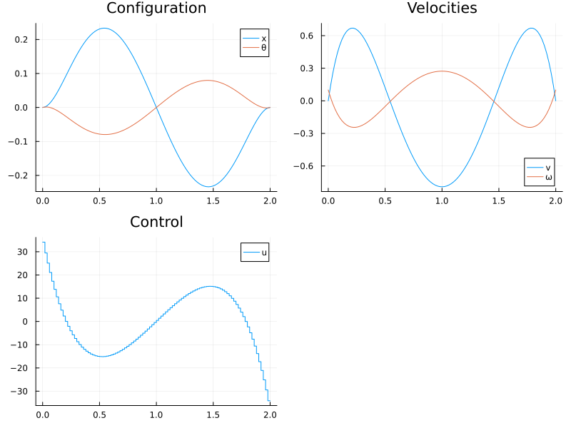

Titre
# ==========================================
# Setup & Imports
# ==========================================
import Pkg
Pkg.activate("Control.jl/ModelingToolkit.jl")
using OptimalControl
using Plots
using StaticArrays
import NLPModelsIpopt
using Symbolics
# ==========================================
# 1. Variables and Parameters
# ==========================================
# Physical Constants
const m_c_val = 5.0
const m_p_val = 1.0
const l_val = 2.0
const g_val = 9.81
const tf_val = 2.0
# Symbolic Variables
@variables t
D = Differential(t)
@variables m_c m_p l g u
@variables x(t) θ(t)
@variables v ω dv dω # Static variables to solve for accelerations
q = [x, θ]
# ==========================================
# 2. Automated Kinematics & Jacobians
# ==========================================
p_c = [x, 0.0]
p_p = [x + l * sin(θ), l * cos(θ)]
F = [u, 0.0]
T = 0.5 * m_c * sum(D.(p_c) .^ 2) + 0.5 * m_p * sum(D.(p_p) .^ 2)
V = g * (m_p * p_p[2])
P_non_conservative = transpose(D.(p_c)) * F
# ==========================================
# 3. Euler-Lagrange & Matrix Inversion
# ==========================================
L = T - V
A = D.(Symbolics.gradient(L, D.(q)))
B = Symbolics.gradient(L, q)
Q = Symbolics.gradient(P_non_conservative, D.(q))
# Euler-Lagrange: d/dt( dL/dq_dot ) - dL/dq = Forces
el_eqs = expand_derivatives.(A - B - Q)
# Freeze time derivatives into static algebraic variables
sub_rules = Dict(D(x) => v, D(θ) => ω, D(D(x)) => dv, D(D(θ)) => dω)
res = Symbolics.substitute.(el_eqs, (sub_rules,))
# Extract Mass Matrix and Bias vector
Mass = Symbolics.jacobian(res, [dv, dω])
bias = Symbolics.substitute.(res, (Dict(dv => 0.0, dω => 0.0),))
# Analytically invert the Mass Matrix (Symbolics handles 2x2 natively)
accel = Mass \ (-bias)
accel = Symbolics.simplify_fractions.(accel)
# The fully explicit state derivatives: X_dot = [v, ω, v_dot, ω_dot]
dx_dt = [v, ω, accel[1], accel[2]]
# ==========================================
# 4. Extract Explicit Dynamics into a Julia Function
# ==========================================
f_expr = build_function(dx_dt, [x, θ, v, ω], u, [m_c, m_p, l, g];
expression=Val{false}, force_SA=true)
f_mtk = f_expr[1]
const p_vals = [m_c_val, m_p_val, l_val, g_val]
cartpole_dynamics(X, U) = f_mtk(X, U, p_vals)
# ==========================================
# 5. OptimalControl.jl dynamic optimization problem
# ==========================================
@def cartpole_ocp begin
t ∈ [0, tf_val], time
X = (x_ocp, θ_ocp, v_ocp, ω_ocp) ∈ R⁴, state
F_ctrl ∈ R, control
X(0) == [0, 0, 0, 0.1]
X(tf_val) - X(0) == [0, 0, 0, 0]
# Inject our explicitly inverted Symbolic dynamics!
Ẋ(t) == cartpole_dynamics(X(t), F_ctrl(t))
∫(F_ctrl(t)^2) → min
end
# ==========================================
# 6. Solvers and Collocation
# ==========================================
initial_guess = (state=[0.0, 0.0, 0.0, 0.1], control=0.0)
@time sol = solve(cartpole_ocp; display=true, grid_size=100, init=initial_guess)
# ==========================================
# 7. Extracting Results
# ==========================================
println("--- Optimal Limit Cycle Found ---")
println("Total Control Energy (∫F² dt): ", sol.objective)
tsol = time_grid(sol)
# tsol = range(sol.model.times.initial.time, sol.model.times.final.time, 1001)
Xsol = state(sol).(tsol)
Fsol = control(sol).(tsol)
xsol = [X[1] for X in Xsol]
θsol = [X[2] for X in Xsol]
vsol = [X[3] for X in Xsol]
ωsol = [X[4] for X in Xsol]
qplot = plot(tsol, [xsol θsol], label=["x" "θ"], title="Configuration")
dqplot = plot(tsol, [vsol ωsol], label=["v" "ω"], title="Velocities")
uplot = plot(tsol, Fsol, label="u", title="Control", linetype=:steppost)
plot(qplot, dqplot, uplot, layout=3, size=(800, 600))